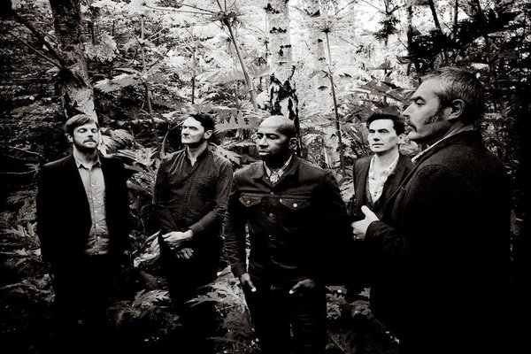

Tindersticks (Interview)

Carving their own niche since the early 1990s, Tindersticks are one of our most distinctive and interesting bands. Infusing soul, jazz and lounge with a nicotine-stained, doomed romanticism, they were never going to be selling out arenas. Yet their intimate and affecting songs won committed admirers and their extraordinary opening triumvirate of studio albums (the first two self-titled, the third called Curtains) led to adoration in the music press and a degree of chart success.
While time progressed and sales fell, Tindersticks’ ambition and invention never waned. They took a break in the mid-2000s but returned (minus three original members) for The Hungry Saw in 2008. Further records have followed, including re-recordings and film scores, and now they’ve returned with The Waiting Room, a record that finds the band as contemplative and the arrangements as lush as always.
Joe Rivers spoke to the band’s pianist, David Boulter, about the new album, nostalgia and what the future may hold.
Joe: The new album features a film accompanying each track – what was the thinking behind approaching the record in that way?
David: It’s an idea we had for previous albums, but we never got everything together in time to do it. Stuart [Staples, lead vocalist] was also a guest judge for a short film festival in France. He found some of the directors from this and a way to connect to them. We had this album finished in a conceptual way well in advance, so we were able to make it work.
J: As a band, you’ve done a lot of soundtrack work throughout your career, how do you feel that informs your songwriting when it comes to more “traditional” studio albums?
D: They allow you a different way to channel your ideas. A different discipline is needed. You get to try new ideas or get new people involved, which can affect the album work. There’s also a lot of musical ideas in the band. It’s not also possible to put this all into one album. So it’s nice to have another outlet.
J: Could you tell me how you came to collaborate with Jehnny Beth of Savages on We Are Dreamers! and what was the experience of working together like?
D: Stuart met Jehnny while working on the music of David Lynch live project a year or so ago. The topic of the song is very much about not losing your dreams, your ideals. The subject seemed to suit her nature too. Savages have a new album out at the same time as ours [Adore Life], so we were very happy that she found time to be involved. And she brings a different aspect to the usual style of duet we do.
J: Stuart has said that Hey Lucinda, the collaboration with the much-missed Lhasa de Sela, has actually been around ten years in the making. Why did you feel that now was the right time to revisit it?
D: It was made around the time Stuart made his second solo album, which also featured a song with Lhasa. It just didn’t feel right musically. We kept bringing it out when we made our next albums; kept fighting with it musically. In the end we made some small changes and it worked and it fits with where we are now. We miss Lhasa very much too. Perhaps a little distance was needed to feel good about that.
J: For Tindersticks as a band, how are the processes of writing, recording and touring different now to how they were in the 1990s?
D: Four of us used to live together. We were always working, basically. I think that’s one reason the first years were so rich musically. But we had day jobs which made the music an escape. After the band got so busy, we needed some space. Now we all live in different countries! It’s not a personal issue between us. It makes touring and recording more of an event. A time to hang out with your closest friends as well as work.
J: 2016 marks the 25th anniversary of the formation of Asphalt Ribbons [the band that became Tindersticks]. Have you anything special planned during the year to mark this milestone?
D: No. We have talked about re-issuing the material. But in some ways it’s best left behind us. They were the building blocks to Tindersticks really. It never felt quite right. But I have great feelings of excitement and sorrow about those first recordings. The original bass player died in very sad circumstances.
J: Ten years ago, you played your second album in full as part of the ‘Don’t Look Back’ series. Are there any more plans to revisit your back catalogue in a similar fashion?
D: It would be nice in some way. But we also feel very different about some songs. You can’t help getting older; things change. It was also special because it was the last thing the original line up did something together. I think we could still do it, but maybe in a different way somehow? I’d like to do the first album complete. That would be a challenge. Problem is, as I said, some songs just don’t turn us on anymore.
J: What are your hopes for this album once it’s released?
D: That it gives me the house, car and lifestyle I deserve. Some hope, haha!
J: You’re touring The Waiting Room for much of the first half of the year. Do you know what your next project is once the tour finishes?
D: There are some ongoing projects. I’m also involved in soundtrack work of my own. All I can think about is now really. And a sunny beach at the end of it.
J: It’s a brand new year. What are you looking forward to most – both personally and professionally – in 2016?
D: A holiday! It’s just feels great to be where we are now. I think the last three albums have been building to this point. It feels like a new lease of life and I hope that feeling continues. The touring sometimes knocks the wind out of your sails. But I'm feeling good about the future.
The Waiting Room is out now on City Slang / Lucky Dog.
28 January, 2016 - 11:22 — Joe Rivers